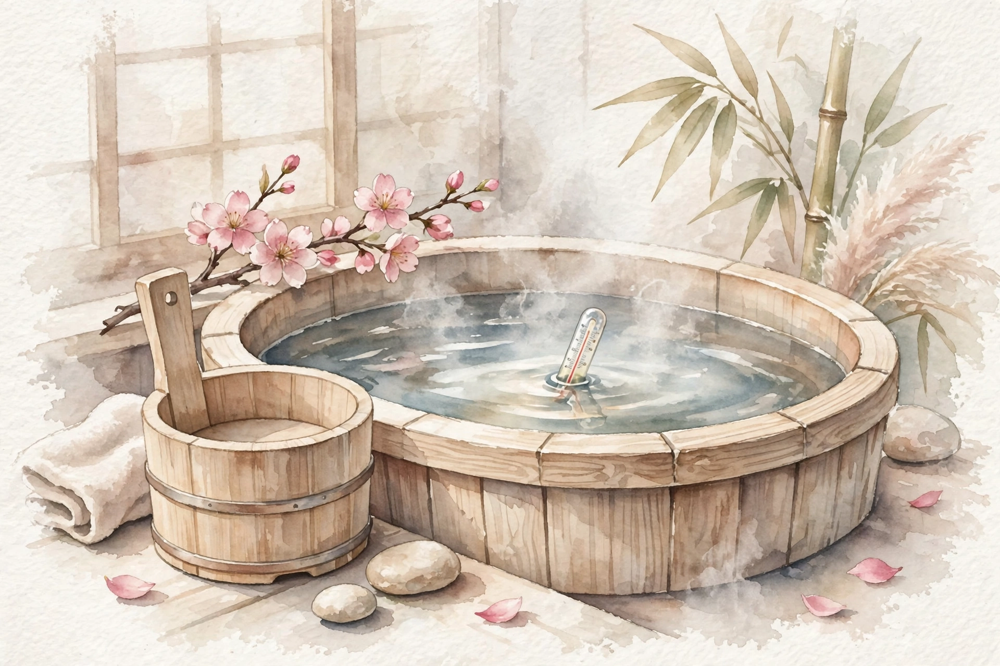

入浴のお湯の温度と時間の目安

入浴のお湯の温度と時間は、家庭ごとに習慣が決まっていることが多いものです。施術の現場でも、温める工程は温度と時間の管理が基本になります。この記事では、温度と時間の目安をどう作るか、その考え方を整理します。体調には個人差が大きいため、数字はあくまで組み立ての出発点として読んでください。目安は「守るもの」ではなく「調整の基準」として持つものです。
温度は「季節」と「つかる時間」で決める
お湯の温度の目安は、一般に、ぬるめと感じる温度帯と、熱めと感じる温度帯に分けて語られます。長くつかりたい日はぬるめに、短時間で済ませたい日は少し熱めに、というように、温度と時間はセットで考えるのが組み立てやすいです。温度だけを先に決めてしまうと、時間との釣り合いが取れなくなります。
季節でも調整します。夏は汗を流すのが主な目的になるので、ぬるめで短めに。冬は体が冷えているので、浴室と脱衣所の温度差にも気を配ります。入浴前に浴室を温めておく、脱衣所に暖房を入れる、といった環境側の工夫も、温度の管理の一部です。かけ湯をしてから入る、という手順も、体への負担を考えた昔ながらの段取りです。
給湯器の設定と、浴槽の中の温度は別
給湯器の設定温度は、浴槽にたまるお湯の温度と、そのまま同じとは限りません。途中で冷める分や、追い焚きの有無で、実際の温度は変わります。私は、入るときに手や足先で温度を確かめる習慣を基本にしています。温度計を浮かべておく家庭もありますが、まずは「確かめてから入る」という手順を決めることが大切です。
家族で入る順番が決まっている家庭では、後の人ほどお湯が冷めていることもあります。設定温度は、家族で話し合って決めておくと、毎日の調整が減ります。子どもや高齢の家族がいる場合は、その家族に合わせた温度を基準にすることも、家庭の決め方のひとつです。
時間は「時計」より「合図」で測る
つかる時間は、タイマーを使う方法もありますが、私は「お風呂で歌を一曲」「ニュースを一本聞く」といった、生活の中の合図で測る方法が続けやすいと感じています。大切なのは、のぼせを感じる前に上がることです。顔がほてってきた、汗が止まらない、と感じたら、時間にかかわらず上がる判断をします。
入浴前後の水分補給も、手順に入れておきます。コップ一杯の水を、脱衣所に用意しておく。それだけで、入浴の流れ全体が整います。上がったあとは、体をよく拭いて、冷めないうちに衣類を着ることまでを、一続きの手順にしておきます。
体調に不安がある方、持病のある方、妊娠中の方は、入浴の温度や時間について、医師等の専門家にご相談ください。入浴中に気分が悪くなった場合は、無理をせず、ゆっくり上がって休んでください。
一人暮らしの場合は、家族と共有する手間がない分、自分の感覚だけで決めがちです。だからこそ、温度計やタイマーなど、数字で確かめる道具をひとつ用意しておくと、感覚のぶれを補えます。体調によって「ちょうどいい」は日々変わるため、数字の基準があると調整の出発点ができます。
入浴の記録をつける方もいます。温度と時間と、その日の体調の感じ方を簡単にメモしておくと、自分の目安が少しずつ精密になっていきます。施術の現場でも、記録は判断の材料です。記録は細かくなくて構いません。日付と温度と一言、それだけでも十分な材料になります。
給湯器の省エネ設定など、家庭の設備側の設定も、温度の管理と関係します。設定を見直すときは、家族全員の入浴の仕方と合わせて決めるのが、無理のない進め方です。目安は、家族で共有してこそ意味を持ちます。
セラフィナ「温度と時間はセットで考える。確かめてから入る、それが基本だね」

セラフィナ｜美容の道具箱の案内役
「量と表示が分かれば、美容は失敗しない。」——セラフィナと白猫のモコが、買う前のチェックポイントを案内します。綺麗になりたい気持ちに正直に、でも表示は冷静に読むのが、このサイトの約束です。